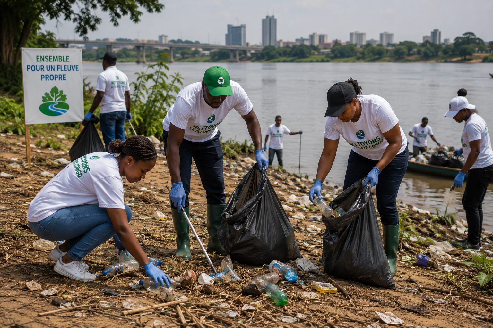
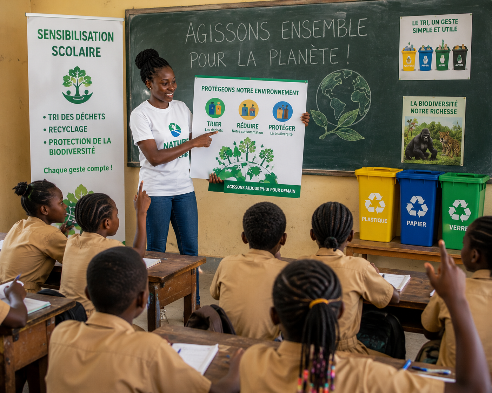

Netoyage du fleuve
Collectes de plastique et de déchets sur les berges du fleuve, organisées régulièrement avec des groupes de bénévoles. L'objectif est double : réduire la pollution qui menace la faune aquatique, et créer un moment de mobilisation collective visible dans la communauté.

Reboisement communautaire
Organisation de journées de plantation d'arbres dans les quartiers de Brazzaville et les zones rurales avoisinantes, en partenariat avec les habitants. Chaque arbre planté est suivi et entretenu par les bénévoles locaux pendant sa première année de croissance. Objectif : restaurer les zones déboisées et sensibiliser les familles à l'importance du couvert forestier.

Sensibilisation scolaire
Ateliers pédagogiques dans les écoles primaires et secondaires autour du tri des déchets, du recyclage, et de la protection de la biodiversité du bassin du Congo. Les élèves repartent avec des gestes simples à appliquer au quotidien, et certaines écoles créent leur propre coin de tri.

Accueil